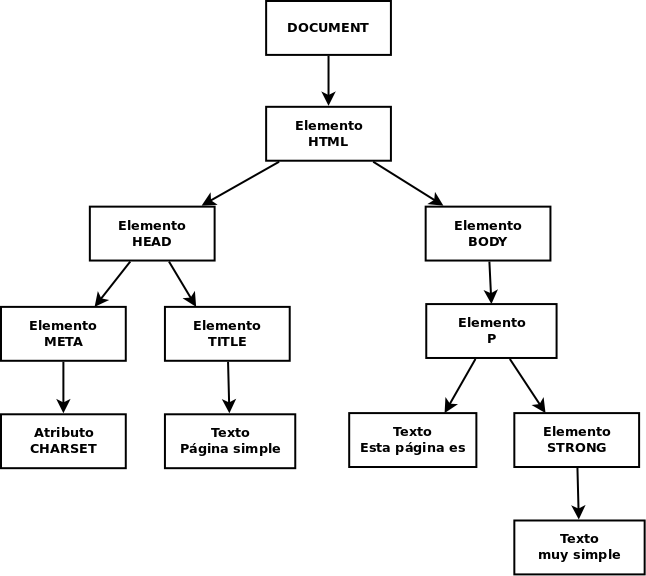

UD2 - 1. Objetos predefinidos del lenguaje (DOM)¶
- Introducción
- Acceso a los nodos
- Acceso a nodos a partir de otros
- Manipular el árbol DOM
- Atributos de los nodos
Introducción¶
La mayoría de las veces que programamos con Javascript es para que se ejecute en una página web mostrada por el navegador. En este contexto tenemos acceso a ciertos objetos que nos permiten interactuar con la página (Document Object Model, DOM) y con el navegador (Browser Object Model, BOM).
El DOM es una estructura en árbol que representa todos los elementos HTML de la página y sus atributos. Todo lo que contiene la página se representa como nodos del árbol y mediante el DOM podemos acceder a cada nodo, modificarlo, eliminarlo o añadir nuevos nodos de forma que cambiamos dinámicamente la página mostrada al usuario.
La raíz del árbol DOM es document y de este nodo cuelgan el resto de elementos HTML. Cada uno constituye su propio nodo y tiene subnodos con sus atributos, estilos y elementos HTML que contiene.
Por ejemplo, la página HTML:
<!DOCTYPE html>
<html>
<head>
<meta charset="utf-8">
<title>Página simple</title>
</head>
<body>
<p>Esta página es <strong>muy simple</strong></p>
</body>
</html>
se convierte en el siguiente árbol DOM:

Cada etiqueta HTML suele originar 2 nodos:
Element: correspondiente a la etiqueta.Text: correspondiente a su contenido (lo que hay entre la etiqueta y su par de cierre).
Cada nodo es un objeto con sus propiedades y métodos.
El ejemplo anterior está simplificado porque sólo aparecen los nodos de tipo elemento pero en realidad también generan nodos los saltos de línea, tabuladores, espacios, comentarios, etc. En el siguiente ejemplo podemos ver TODOS los nodos que realmente se generan. La página:
<!DOCTYPE html>
<html>
<head>
<title>My Document</title>
</head>
<body>
<h1>Header</h1>
<p>
Paragraph
</p>
</body>
</html>
se convierte en el siguiente árbol DOM:

Acceso a los nodos¶
Los principales métodos para acceder a los diferentes nodos son:
-
.getElementById(id)Devuelve el nodo con la
idpasada.Ej.:
-
.getElementsByClassName(clase)Devuelve una colección (
Set, no un array) con todos los nodos de la clase indicada.Ej.:
index.html<h2>Lista</h2> <ul> <li class="fruta">Manzana</li> <li class="verdura">Brócoli</li> <li class="fruta">Pera</li> <li class="fruta">Kiwi</li> </ul>main.jslet frutas = document.getElementsByClassName('fruta'); // nodos contendrá todos los nodos cuya clase es "fruta" Array.from(frutas).forEach(fruta => console.log(fruta.textContent));NOTA:
las colecciones son similares a arrays (se accede a sus elementos con
[indice]) pero no se les pueden aplicar sus métodosfilter,map,forEach, etc. a menos que se conviertan a arrays conArray.from() -
.getElementsByTagName(etiqueta)Devuelve una colección con todos los nodos de la etiqueta HTML indicada.
Ej.:
index.html<h2>Lista</h2> <ul id="frutas"> <li>Manzana</li> <li>Pera</li> <li>Kiwi</li> </ul> <ul id="verduras"> <li>Brócoli</li> <li>Berenjena</li> </ul> -
.querySelector(selector)Devuelve el primer nodo seleccionado por el selector CSS indicado.
Ej.:
-
.querySelectorAll(selector)Devuelve una colección con todos los nodos seleccionados por el selector CSS indicado.
Ej.:
NOTA:
al aplicar estos métodos sobre document se seleccionará sobre la página pero podrían también aplicarse a cualquier nodo y en ese caso la búsqueda se realizaría sólo entre los descendientes de dicho nodo.
También tenemos 'atajos' para obtener algunos elementos comunes:
document.documentElement: devuelve el nodo del elemento<html>document.head: devuelve el nodo del elemento<head>document.body: devuelve el nodo del elemento<body>document.title: devuelve el nodo del elemento<title>document.links: devuelve una colección con todos los hiperenlaces del documentodocument.anchors: devuelve una colección con todas las anclas del documentodocument.forms: devuelve una colección con todos los formularios del documentodocument.images: devuelve una colección con todas las imágenes del documentodocument.scripts: devuelve una colección con todos los scripts del documento
ACTIVIDAD 1: 📂 UD2/act01/
Descarga esta página html de ejemplo en el directorio de la actividad.
Crea el archivo main.js
Incluye el script en la página HTML con un <script src="main.js"> al final del <body> o con un <script src="main.js" defer> en el <head>.
Añade el código necesario para obtener los siguientes elementos y mostrarlos por consola:
- El elemento con
id'input2' - La colección de párrafos
- Lo mismo pero sólo de los párrafos que hay dentro del
div'lipsum' - El formulario (ojo, no la colección con el formulario sino sólo el formulario)
- Todos los elementos input
- Sólo los
inputcon nombre 'sexo' - Los items de lista con clase 'important' (sólo los
<li>)
Acceso a nodos a partir de otros¶
En muchas ocasiones queremos acceder a cierto nodo a partir de uno dado. Para ello tenemos los siguientes métodos que se aplican sobre un elemento del árbol DOM:
-
element.parentElementDevuelve el nodo padre de
element -
elemento.childrenDevuelve la colección con todos los elementos hijo de elemento.
Sólo elementos HTML, no comentarios ni nodos de tipo texto.
-
elemento.childNodesDevuelve la colección con todos los hijos de elemento.
Incluye comentarios y nodos de tipo texto por lo que no suele utilizarse.
-
elemento.firstElementChildDevuelve el elemento HTML que es el primer hijo de elemento
-
elemento.firstChildDevuelve el nodo que es el primer hijo de elemento.
Incluye nodos de tipo texto o comentarios.
-
elemento.lastElementChild,elemento.lastChildIgual que
firstElementChildyfirstChildpero con el último hijo. -
elemento.nextElementSiblingDevuelve el elemento HTML que es el siguiente hermano de elemento
-
elemento.nextSiblingDevuelve el nodo que es el siguiente hermano de elemento.
Incluye nodos de tipo texto o comentarios.
-
elemento.previousElementSibling,elemento.previousSiblingIgual pero con el hermano anterior.
-
elemento.hasChildNodesIndica si elemento tiene o no nodos hijos.
-
elemento.childElementCountDevuelve el número de nodos hijo de elemento.
IMPORTANTE:
A menos que interesen comentarios, saltos de página, etc., siempre se deben usar los métodos que sólo devuelven elementos HTML, no todos los nodos.

ACTIVIDAD 2: 📂 UD2/act02/
Siguiendo con la página de ejemplo y la estructura de la actividad anterior, añade el código necesario para obtener los siguientes elementos y mostrarlos por consola:
- El primer párrafo que hay dentro del
divconid'lipsum' - El segundo párrafo de
'lipsum' - El último item de la lista
- El
labelde 'Escoge sexo'
Propiedades de un nodo¶
Las principales propiedades de un nodo son:
-
elemento.innerHTMLTodo lo que hay entre la etiqueta que abre elemento y la que lo cierra, incluyendo otras etiquetas HTML.
Ej.:
-
elemento.textContentTodo lo que hay entre la etiqueta que abre elemento y la que lo cierra, pero ignorando otras etiquetas HTML.
Podemos usarlo tanto para leer como para escribir el contenido de un nodo.
Ej.:
js// Lee el contenido: var text = document.getElementById("texto").textContent; // |text| contiene la cadena "Esto es un texto". // Escribe el contenido: document.getElementById("texto").textContent = "Nuevo texto"; // Se ha modificado el HTML en tiempo de ejecución, // ahora contiene una nueva cadena: // <p id="texto">Nuevo texto</p> -
elemento.valueDevuelve la propiedad
valuede un<input>(en el caso de un<input>de tipo text devuelve lo que hay escrito en él).Como los
<input>no tienen etiqueta de cierre (</input>) no podemos usar.innerHTMLni.textContent.Por ejemplo si
elem1es el nodo<input name="nombre">yelem2es el nodo<input type="radio" value="H"> Hombrehtml<form action="#"> <label for="nombre">Nombre:</label> <input type="text" id="nombre" name="nombre"> <fieldset> <legend>Lenguaje favorito:</legend> <div> <input type="radio" name="fav" id="html" value="HTML"> <label for="html">HTML</label> </div> <div> <input type="radio" name="fav" id="css" value="CSS"> <label for="css">CSS</label> </div> <div> <input type="radio" name="fav" id="js" value="JavaScript" checked> <label for="js">JavaScript</label> </div> </fieldset> </form>
Otras propiedades:
elemento.innerText: Se recomienda no usarlo, es similar atextContentelemento.focus: da el foco a elemento (para inputs, etc.).elemento.blur: quita el foco de elemento.elemento.clientHeight/elemento.clientWidth: devuelve el alto / ancho visible del elementoelemento.offsetHeight/elemento.offsetWidth: devuelve el alto / ancho total del elementoelemento.clientLeft/elemento.clientTop: devuelve la distancia de elemento al borde izquierdo / superiorelemento.offsetLeft/elemento.offsetTop: devuelve los píxels que hemos desplazado elemento a la izquierda / abajo
ACTIVIDAD 3: 📂 UD2/act03/
Siguiendo con la página de ejemplo y la estructura de la actividad anterior, añade el código necesario para realizar las los siguientes operaciones:
- Selecciona y muestra por consola el
innerHTMLde la etiqueta de 'Escoge sexo'. - Selecciona y muestra por consola
textContentde esa etiqueta. - Modifica el
textContentde esa etiqueta para que ponga 'Género:'. - Selecciona y muestra por consola valor del primer
inputde 'sexo'. - Selecciona y muestra por consola valor del 'sexo' que esté seleccionado.
Manipular el árbol DOM¶
Vamos a ver qué métodos nos permiten cambiar el árbol DOM, y por tanto modificar el HTML de la página:
-
document.createElement('etiqueta')crea un nuevo elemento HTML con la etiqueta indicada, pero aún no se añade a la página. Ej.:
-
document.createTextNode('texto')crea un nuevo nodo de texto con el texto indicado, que luego tendremos que añadir a un nodo HTML. Ej.:
-
elemento.appendChild(nuevoNodo):añade nuevoNodo como último hijo de elemento. Ahora ya se ha añadido a la página. Ej.:
let nuevoLi = document.createElement('li'); let textoLi = document.createTextNode('Nuevo elemento de lista'); // añade el texto creado al elemento <li> creado nuevoLi.appendChild(textoLi); // selecciona el 1º <ul> de la página let miPrimeraLista = document.getElementsByTagName('ul')[0]; // añade <li> como último hijo de <ul>, es decir al final de la lista miPrimeraLista.appendChild(nuevoLi); -
elemento.insertBefore(nuevoNodo, nodo)añade nuevoNodo como hijo de elemento antes del hijo nodo. Ej.:
// selecciona el 1º <ul> de la página let miPrimeraLista = document.getElementsByTagName('ul')[0]; // selecciona el 1º <li> dentro de miPrimeraLista let primerElementoDeLista = miPrimeraLista.getElementsByTagName('li')[0]; // añade <li> al principio de la lista miPrimeraLista.insertBefore(nuevoLi, primerElementoDeLista); -
elemento.removeChild(nodo)borra nodo de elemento y por tanto se elimina de la página. Ej.:
// selecciona el 1º <ul> de la página let miPrimeraLista = document.getElementsByTagName('ul')[0]; // selecciona el 1º <li> dentro de miPrimeraLista let primerElementoDeLista = miPrimeraLista.getElementsByTagName('li')[0]; // borra el primer elemento de la lista miPrimeraLista.removeChild(primerElementoDeLista); // También podríamos haberlo borrado sin tener el padre con: primerElementoDeLista.parentElement.removeChild(primerElementoDeLista); -
elemento.replaceChild(nuevoNodo, viejoNodo)reemplaza viejoNodo con nuevoNodo como hijo de elemento. Ej.:
// crea el nodo let nuevoLi = document.createElement('li'); let textoLi = document.createTextNode('Nuevo elemento de lista'); nuevoLi.appendChild(textoLi); // selecciona el 1º <ul> de la página let miPrimeraLista = document.getElementsByTagName('ul')[0]; // selecciona el 1º <li> de miPrimeraLista let primerElementoDeLista = miPrimeraLista.getElementsByTagName('li')[0]; // reemplaza el 1º elemento de la lista con nuevoLi miPrimeraLista.replaceChild(nuevoLi, primerElementoDeLista); -
elementoAClonar.cloneNode(boolean)devuelve una copia de elementoAClonar o de elementoAClonar con todos sus descendientes según le pasemos como parámetro
falseotrue. Luego podremos insertarlo donde queramos.MUCHO CUIDADO
Si añadimos con el método
appendChildun nodo que estaba en otro sitio se elimina de donde estaba para añadirse a su nueva posición.Si queremos que esté en los 2 sitios deberé clonar el nodo y luego añadir la copia y no el nodo original.
Ejemplo de creación de nuevos nodos: tenemos un código HTML con un DIV que contiene 3 párrafos y vamos a añadir un nuevo párrafo al final del div con el texto 'Párrafo añadido al final' y otro que sea el 2º del div con el texto 'Este es el nuevo segundo párrafo':
Si utilizamos la propiedad innerHTML el código a usar es mucho más simple:
CUIDADO
La forma de añadir el último párrafo (línea #3: miDiv.innerHTML+='<p>Párrafo añadido al final</p>';) aunque es válida no es muy eficiente ya que obliga al navegador a volver a pintar TODO el contenido de miDIV. La forma correcta de hacerlo sería:
let ultimoParrafo = document.createElement('p');
ultimoParrafo.innerHTML = 'Párrafo añadido al final';
miDiv.appendChild(ultimoParrafo);
Así sólo debe repintar el párrafo añadido, conservando todo lo demás que tenga miDiv.
Podemos ver más ejemplos de creación y eliminación de nodos en W3Schools.
ACTIVIDAD 4: 📂 UD2/act04/
Siguiendo con la página de ejemplo y la estructura de la actividad anterior, añade el código necesario para añadir a la página:
- Un nuevo párrafo al final del DIV 'lipsum' con el texto "Nuevo párrafo añadido por javascript" (fíjate que una palabra esta en negrita)
- Un nuevo elemento al formulario tras el 'Dato 1' con la etiqueta 'Dato 1 bis' y el INPUT con id 'input1bis' que al cargar la página tendrá escrito "Hola"
Atributos de los nodos¶
Podemos ver y modificar los valores de los atributos de cada elemento HTML y también añadir o eliminar atributos:
elemento.attributes: devuelve un array con todos los atributos de elementoelemento.hasAttribute('nombreAtributo'): indica si elemento tiene o no definido el atributo nombreAtributoelemento.getAttribute('nombreAtributo'): devuelve el valor del atributo nombreAtributo de elemento. Para muchos elementos este valor puede directamente conelemento.atributo.elemento.setAttribute('nombreAtributo', 'valor'): establece valor como nuevo valor del atributo nombreAtributo de elemento. También puede cambiarse el valor directamente conelemento.atributo=valor.elemento.removeAttribute('nombreAtributo'): elimina el atributo nombreAtributo de elemento
A algunos atributos comunes como id, title o className (para el atributo class) se puede acceder y cambiar como si fueran una propiedad del elemento (elemento.atributo). Ejemplos:
// selecciona el 1º <ul> de la página
let miPrimeraLista = document.getElementsByTagName('ul')[0];
miPrimeraLista.id = 'primera-lista';
// es equivalente ha hacer:
miPrimeraLista.setAttribute('id', 'primera-lista');
Estilos de los nodos¶
Los estilos están accesibles como el atributo style. Cualquier estilo es una propiedad de dicho atributo pero con la sintaxis camelCase en vez de kebab-case. Por ejemplo para cambiar el color de fondo (propiedad background-color) y ponerle el color rojo al elemento miPrimeraLista haremos:
De todas formas normalmente NO CAMBIAREMOS ESTILOS a los elementos sino que les pondremos o quitaremos clases que harán que se le apliquen o no los estilos definidos para ellas en el CSS.
Atributos de clase¶
Ya sabemos que el aspecto de la página debe configurarse en el CSS por lo que no debemos aplicar atributos style al HTML. En lugar de ello les ponemos clases a los elementos que harán que se les aplique el estilo definido para dicha clase.
Como es algo muy común en lugar de utilizar las instrucciones de elemento.setAttribute('className', 'destacado') o directamente elemento.className='destacado' podemos usar la propiedad classList que devuelve la colección de todas las clases que tiene el elemento. Por ejemplo si elemento es <p class="destacado direccion">...:
// clases=['destacado', 'direccion'], OJO es una colección, no un Array
let clases=elemento.classList;
Además dispone de los métodos:
.add(clase): añade al elemento la clase pasada (si ya la tiene no hace nada). Ej.:.remove(clase): elimina del elemento la clase pasada (si no la tiene no hace nada). Ej.:-
.toogle(clase): añade la clase pasada si no la tiene o la elimina si la tiene ya. Ej.: -
.contains(clase): dice si el elemento tiene o no la clase pasada. Ej.:
-
.replace(oldClase, newClase): reemplaza del elemento una clase existente por una nueva. Ej.:
Tened en cuenta que NO todos los navegadores soportan classList por lo que si queremos añadir o quitar clases en navegadores que no lo soportan debemos hacerlo con los métodos estándar, por ejemplo para añadir la clase 'rojo':
let clases = elemento.className.split(" ");
if (clases.indexOf('rojo') == -1) {
elemento.className += ' ' + 'rojo';
}
ACTIVIDAD 5: 📂 UD2/act05/
En esta actividad tendrás que crear una página que permita generar una tabla de tamaño variable, seleccionar una celda al azar y borrar la tabla.
- Crea los archivos
index.htmlymain.jsen el directorio de la actividad. - Dale una estructura básica a la página
index.htmly añade un el scriptmain.js. - Crea los siguientes elementos en la página:
- Un
<input type="text">conid'table_x' - Un
<input type="text">conid'table_y' - Un botón
<button>conid'generar'y texto'Generar', añade el atributoonclickcon el valor'generarTabla()' - Añade un
<button>conid'borrar'y texto'Borrar', añade el atributoonclickcon el valor'borrarTabla()' - Un
<div>conid'tabla' - Un
<ol>conid'seleccion'
- Un
- En
main.jscrea una funcióngenerarTabla()que:- Lea los valores de los
<input>de'table_x'y'table_y' - Cree una tabla de
table_xfilas ytable_ycolumnas dentro del<div>'tabla' - Cada celda de la tabla tendrá un un
id'celda_x_y'dondexes el número de fila yyel número de columna. El texto del<span>será'x,y'.
- Lea los valores de los
- Función
borrar()que:- Limpie el contenido del
<div>'tabla', los valores del formulario y el contenido del<ol>'seleccion'.
- Limpie el contenido del
-
Función
seleccionaCelda()que:- Seleccione una celda al azar de la tabla y cambie su color de fondo, por ejemplo a rojo.
- Añada un nuevo elemento
<li>al<ol>'seleccion'con el texto de la celda seleccionada ('x,y'). - Modifica
index.htmlpara aparezca un botón'Seleccionar'y en el atributoonclickvalor'seleccionaCelda()'. - Si existen celdas seleccionadas con anterioridad, se debe cambiar el color de fondo a otro distinto de la seleccionada actualmente, por ejemplo a gris.
- Consejo: resultará más fácil si modificas las clases de las celdas en lugar de los estilos directamente.
-
Opcional:
- ¿Qué ocurre si se pulsa el botón
'Generar'sin haber borrado la tabla anterior? Implementa una solución.
- ¿Qué ocurre si se pulsa el botón
Nota: Cuando veamos eventos podremos utilizar tablas para realizar algún juego como el buscaminas, el tres en raya, etc.